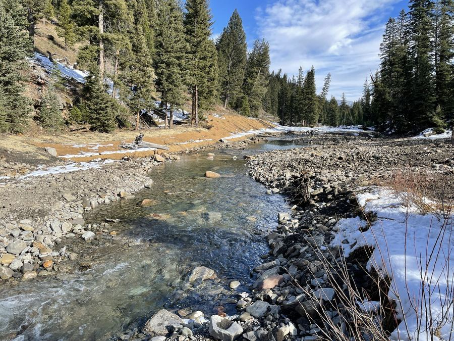
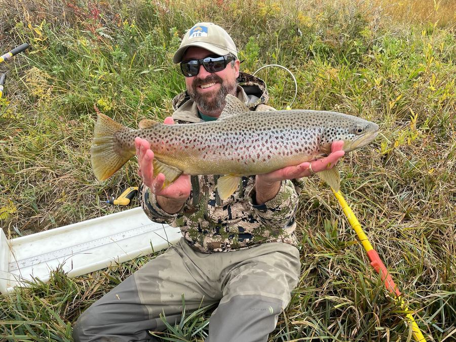
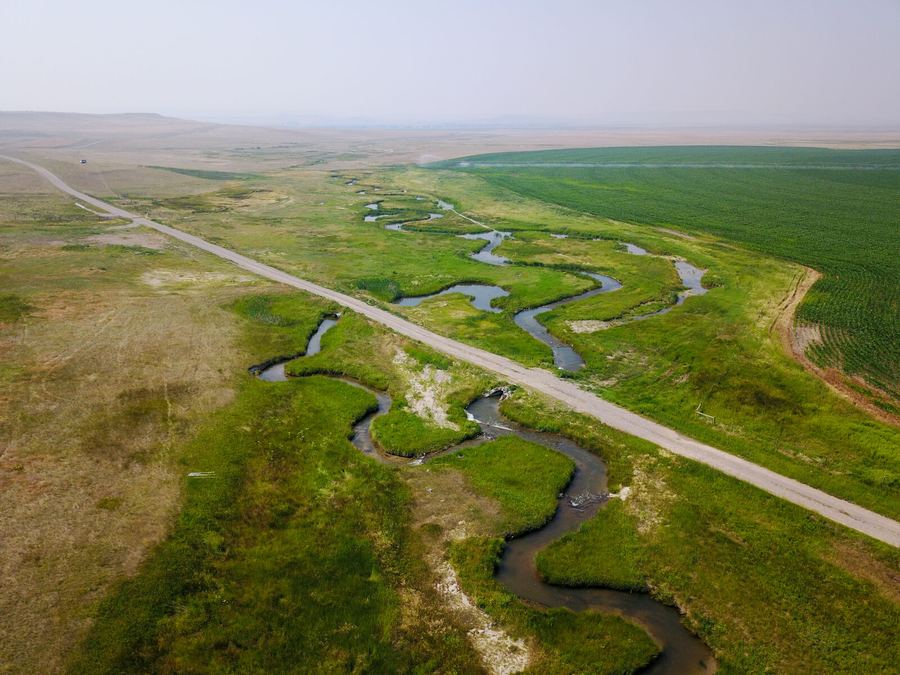

- Better fish habitat and fishing
- Increased wildlife habitat
- Real estate improvement
- Irrigation efficiency
- Reduction of riverbank erosion / land loss
What Troutwater Restoration, LLC. can do for you
River, Stream and Wetland Restoration Design
Environmental Permitting
Construction Oversight



Clients
Private Landowners
Other Professionals and Consultants
Private ranch companies
Watershed Groups
Non-profits
State and Federal land agencies
Unique, insightful, cost effective projects
TWR Example Project Types
- Stream channels and wetlands that were re-aligned for agriculture usage. Example solution: put the stream back into its original alignment, restoring riffle/pool sequence, streambanks and the adjacent riparian area.
- Streams and rivers with land previously only managed for livestock. Example solution: change or remove grazing impacts and restore and enhance the impacted reaches.
- Streams and rivers with land previously only managed for farming and irrigation. Example solution: relocate irrigation water off and out of the impacted streams, enhance and restore to a more natural hydrograph and stream channel cross-sectional area.
- Streams and rivers adversely impacted by agriculture infrastructure. Example solution: route stream or river around infrastructure to the extent reasonable.
- Streams and rivers adversely impacted by urbanizing watersheds. Example solution: install a robust, more resilient sub-gradient and bio-engineer river banks.